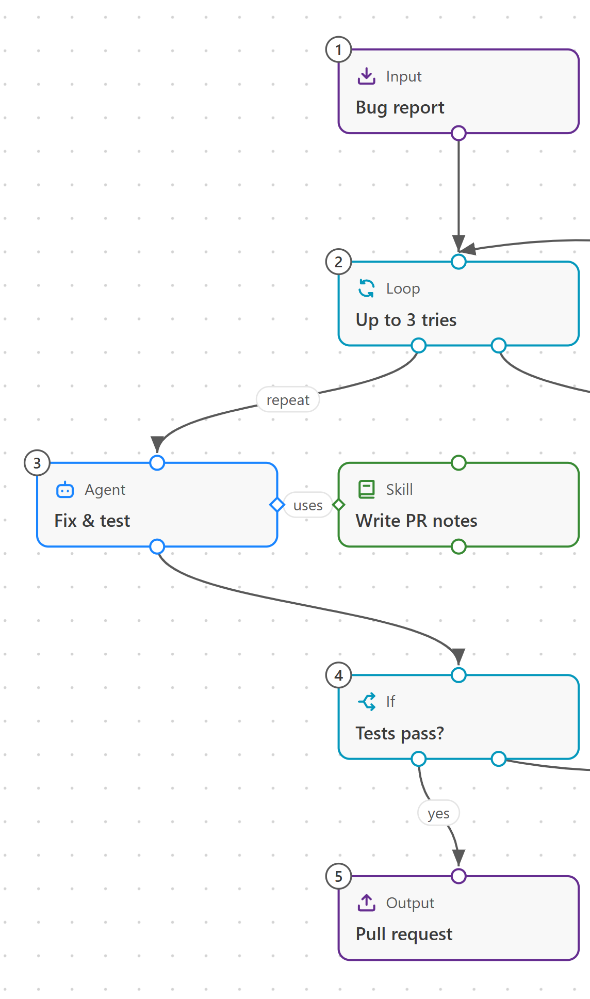

.claude/agents/fix-test.md{{file:claude:agents/fix-test.md}}
Skill Canvas is a free VS Code extension. Draw how the work should flow, answer a few plain questions for each step, and it writes the agent and skill files that Claude Code and GitHub Copilot run. No YAML, no folder rules to learn.
Or from a terminal:
code --install-extension alaturqua.skill-canvas
.claude/agents/fix-test.md{{file:claude:agents/fix-test.md}}
.claude/skills/loop-example/SKILL.md{{file:claude:skills/loop-example/SKILL.md}}
This is the real editor, running in your browser. Drag a block in, connect it, press Arrange. Select an agent or skill and its Claude Code and Copilot files reprint below; the details panel button fills it in. Nothing leaves this page.
Export here only shows what it would save. The extension writes the files.

.claude/agents/fix-test.md{{file:claude:agents/fix-test.md}}
.github/agents/fix-test.agent.md{{file:copilot:agents/fix-test.agent.md}}
Five steps, all inside VS Code.
Drag blocks onto the board: Input, Agent, Skill, Tool, If, Loop and Output. Or start from a ready-made starter.
Each block asks plain questions: what it's for, its instructions, which tools it may use. The preview shows the file it becomes.
Arrows set the order. A dotted uses link gives an agent a skill or tool. If and Loop handle yes, no and retries. Arrange tidies it all left to right or top to bottom.
Save to this project or to all your projects. Skill Canvas lists every file before writing, and updates the ones it wrote last time.
Type the workflow's command, like /loop-example, in Claude Code or GitHub Copilot Chat.
Import brings them onto the board from .claude or .github in your project, or from your user folder. Skills an agent preloads arrive already linked. Edit them on the board, export, and the same files update in place.
Standard locations, so the tools find them without Skill Canvas installed.
| For | Agents | Skills and workflows |
|---|---|---|
| Claude Code, this project | .claude/agents/<name>.md | .claude/skills/<name>/SKILL.md |
| Claude Code, all projects | ~/.claude/agents/<name>.md | ~/.claude/skills/<name>/SKILL.md |
| GitHub Copilot, this project | .github/agents/<name>.agent.md | .github/skills/<name>/SKILL.md |
| GitHub Copilot, all projects | ~/.copilot/agents/<name>.agent.md | ~/.copilot/skills/<name>/SKILL.md |
Free and open source under the Apache License 2.0.
Or from a terminal:
code --install-extension alaturqua.skill-canvas